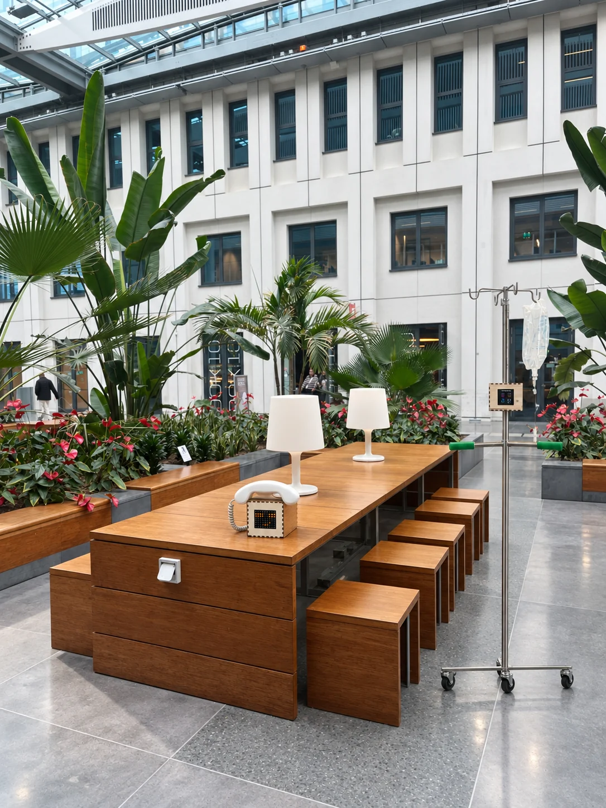
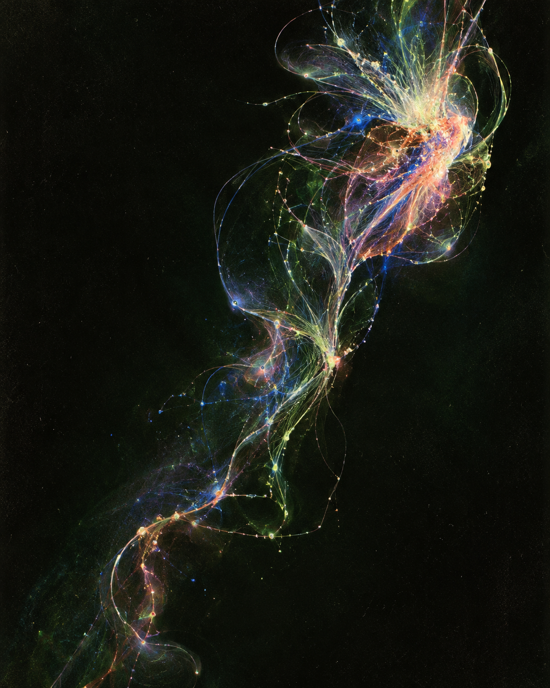
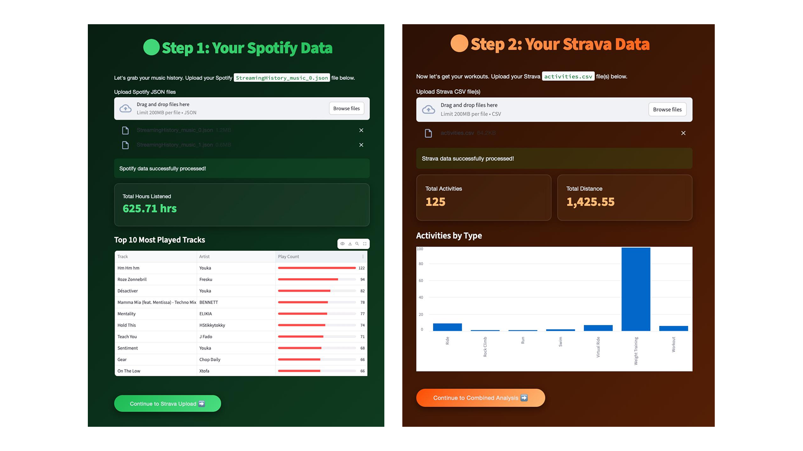
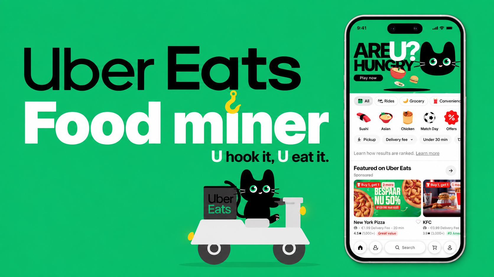

Whispering Garden
Turning passive waiting into an active response through a garden-based interaction shaped with recurring infusion patients and built as working hardware.
- User research
- Interaction design
- Hardware prototyping

AI Product User Experience Designer
I design the space between people and intelligent systems.
Enter selected work
Profile / Practice
My practice moves between field research, interface systems, and physical prototyping. I look for the moment when unfamiliar technology becomes understandable, useful, and quietly natural.
Selected work / Four projects
From patient experience and social fitness to AI decision support and generative motion, each project turns an abstract system into something people can read, feel, or act on.
Turning passive waiting into an active response through a garden-based interaction shaped with recurring infusion patients and built as working hardware.

A coordinated fitness concept that connects listening history with workout data, turning individual effort, group rhythm, and recovery cues into one readable system.

An AI decision shortcut that turns endless scrolling into six personalized picks, helping people reach a confident order faster.

A live video pipeline that isolates a moving subject and rebuilds every frame as an eight-tone field of characters.